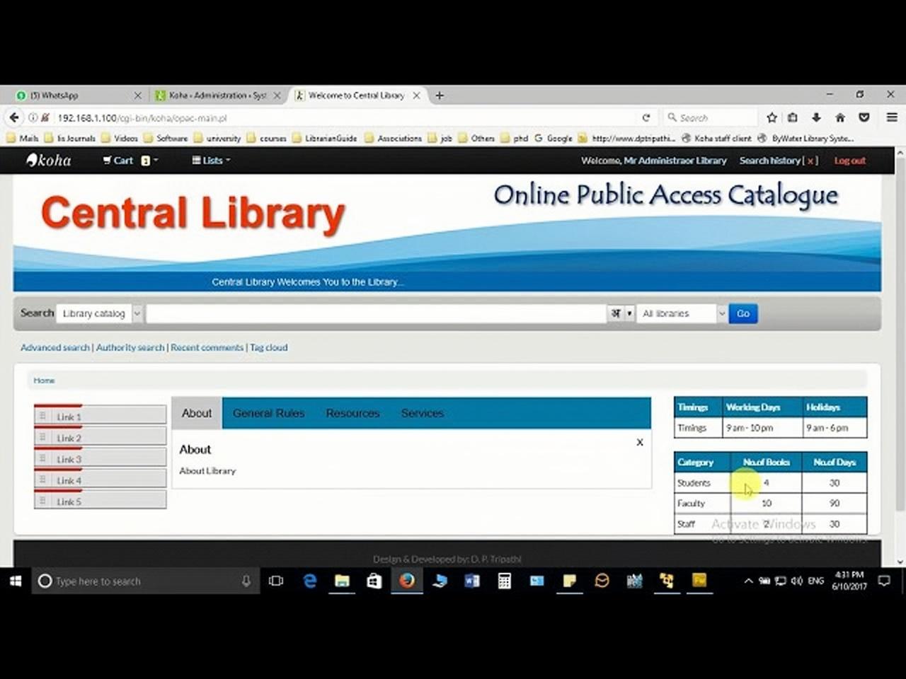
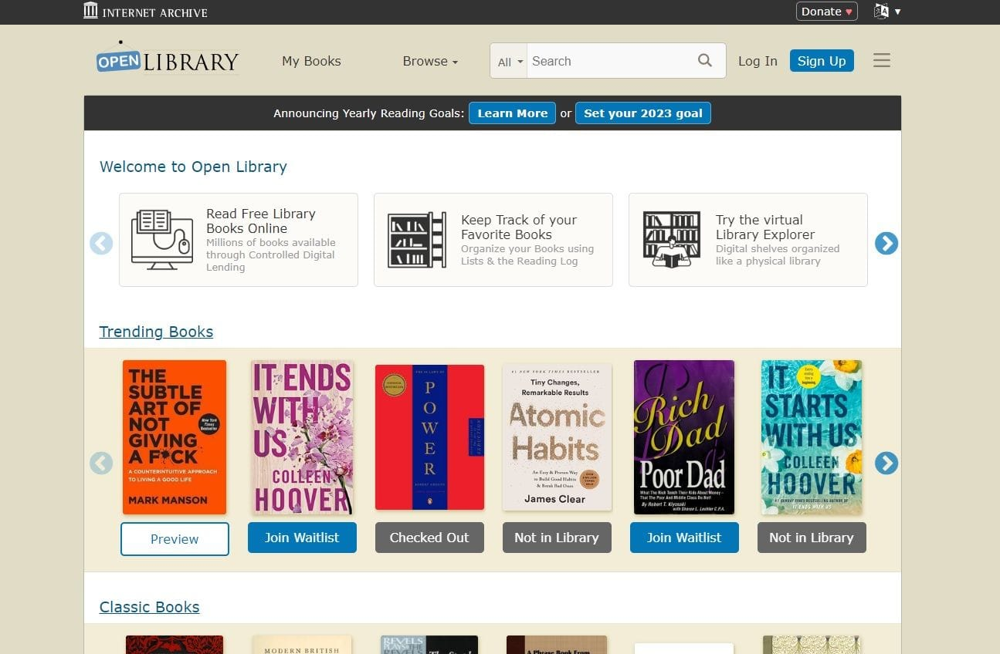

Online Public Access Catalog (OPAC)
OPAC adalah sistem katalog daring yang memungkinkan pengguna mencari koleksi perpustakaan secara digital.

Digital Library
Perpustakaan digital memungkinkan akses ke buku, jurnal, dan dokumen elektronik dari berbagai lokasi.
Artificial Intelligence
Teknologi terbaru dalam perpustakaan, seperti AI dan chatbot, membantu layanan pemustaka dan pustakawan menjadi lebih cepat.